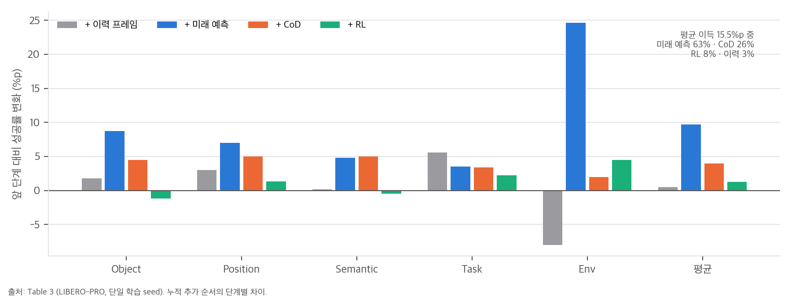
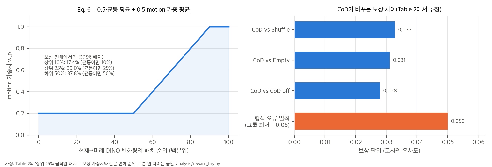
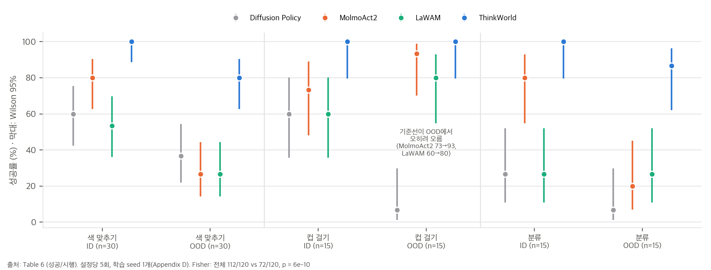

한 줄 요약: VLA의 VLM이 행동 전에 **사람과 로봇이 공유하는 이산 손목 움직임 토큰(Chain-of-Dynamics, CoD)**을 생성하고, 그 CoD가 1초 뒤 장면(DINOv3 특징)을 어떻게 바꿀지 예측하도록 학습합니다. 그다음 예측한 미래와 실제 미래가 잘 맞는 CoD에 보상을 주는 GRPO로 VLM을 강화합니다. 배포할 때는 CoD도 미래 예측도 쓰지 않습니다.
저자들이 내세우는 기여는 세 가지입니다(Sec. 1).
입력: 지시문 l, 이력 h_t(최대 16프레임, 2 Hz), 현재 관측 o_t(+손목 카메라), 고유수용 상태 s_t(256-bin 토큰)
▼
Qwen3-VL-2B (VLM)
├─ 학습: <think> CoD 토큰열 c_t </think> ← FAST 토크나이저(어휘 2,048)로 만든 1초 손목 움직임
├─ 학습: 미래 질의 64개 q → MLP + 6층 cross-attention → DINOv3 ViT-H/16+ 패치 196개(1초 뒤)
└─ 추론: 빈 <think></think> (CoD·미래 예측 없음)
▼ 입력 토큰의 층별 KV만 전달 (CoD·미래 질의 토큰은 전달 안 함)
MolmoAct2 action expert (36블록, 폭 768, FP32, flow matching, Euler 10스텝) → 연속 행동 chunk
| 단계 | 학습 대상 | 목적 | 규모 (Table 5) |
|---|---|---|---|
| VLM SFT | 언어 모델 + 미래 projector | CoD·VQA cross-entropy + 3·L_future | 150k iter, 배치 128, GPU 16×8 |
| Action SFT | action expert만 (VLM 고정) | masked flow matching | 50k iter(현재 시점 5k + 이력 45k), GPU 8×8 → 16×8 |
| RL | 언어 모델만 (expert·projector 고정) | GRPO/GDPO + 약한 SFT replay | 2k iter, 배치 128, K = 4, GPU 8×8 |
| 사후학습 | LIBERO: 전체 미세조정 50k / YAM: 적응 후 과제별 LoRA 50k | 대상 embodiment | LIBERO GPU 32장, YAM GPU 64장 |
CoD 뒤에 학습 가능한 미래 질의 q_{t+Δ}를 붙입니다. 질의는 VLM을 거쳐 q̃가 되고, 가벼운 decoder가 이것을 동결된 DINOv3 특징 공간의 z_{t+Δ}로 바꿉니다(Eq. 1). 표적은 Δ = 1초 뒤 주 카메라 프레임의 DINOv3 특징 z*입니다(±50 ms 안에 프레임이 없으면 손실에서 뺌).
L_SFT = L_CoD + λ_future · L_future (Eq. 2, λ_future = 3)
dist(z, z*) = (1/|V|) Σ_p [ 1 − cos(z_p, z*_p) + λ_SL1 · SmoothL1_β(z_p, z*_p) ] (Eq. 5, β = 0.01)
학습 때 미래 예측은 **정답 CoD(teacher forcing)**에 조건화됩니다.
같은 맥락에서 CoD 후보 K = 4개를 뽑고, 각 후보로 예측한 미래를 실제 미래와 비교해 보상을 줍니다.
sim(z, z*) = ½ [ (1/|V|) Σ_p s_p + Σ_p w_p s_p / Σ_p w_p ], s_p = cos(z_p, z*_p) (Eq. 6)
w_p = 0.2 (변화량 ≤ 중앙값) → 선형 증가 → 1 (≥ 90분위), 변화량 = 현재→관찰 미래의 DINO 특징 변화
L_RL = 0.999 · L_GRPO(r_world) + 0.001 · L_replay (Eq. 4)
Action SFT와 추론은 빈 <think></think>를 씁니다. 배포된 정책은 CoD도 미래 예측도 생성하지 않으므로, 구조상 Qwen3-VL + MolmoAct2 action expert VLA와 같습니다. CoD, 미래 예측, RL은 모두 VLM 가중치를 바꾸는 학습 신호로만 작동합니다(부록 C.5).
| 출처 | 에피소드 | 프레임 | 시간 | 행동 표현 |
|---|---|---|---|---|
| YAM, DROID, RoboCOIN, Bridge, RT-1, BC-Z (로봇 6종) | 398.6K | 187.3M | 2,396 h | 관절 또는 EEF (데이터셋 고유) |
| EgoVerse, EgoDex (사람 egocentric 2종) | 370.4K | 203.1M | 1,880 h | 1초 6D/12D 움직임 토큰 |
| 합계 | 769.1K | 390.3M | 4,276.1 h |
사람 데이터 비율은 시간 기준 44%, 프레임 기준 52%, 에피소드 기준 48%입니다(04 C7). 데이터셋 표집 가중치는 공개하지 않았습니다.
YAM 양팔(카메라 3대, RGB만)에서 세 과제를 평가합니다. 색 맞추기는 ID·OOD 설정이 6개씩, 컵 걸기와 분류는 3개씩이고, 설정당 5회입니다.
| 방법 | ID 성공 (60회) | OOD 성공 (60회) | Macro | Micro |
|---|---|---|---|---|
| Diffusion Policy | 31 | 13 | 32.8 | 36.7 |
| MolmoAct2 | 47 | 25 | 62.2 | 60.0 |
| LaWAM | 29 | 24 | 45.6 | 44.2 |
| ThinkWorld | 60 | 52 | 94.4 | 93.3 |
해석 (재계산은 04 C1–C3):
오븐 과제(열기, 닫기, 왼쪽·오른쪽 물체 넣기)에서 로봇 데모는 원자 기술 100개 에피소드만 쓰고, 전체 순서는 사람 영상 90개에만 있습니다. ThinkWorld가 열기 → 왼쪽 넣기 → 닫기를 한 번의 rollout으로 수행하는 정성 결과를 보였습니다. 서랍 과제도 정성 결과만 있습니다. 시행 수, 성공률, 기준선 비교가 없습니다. 이 사후학습에서 사람 영상은 VLM 미래 예측 손실만으로 학습되고, 행동 손실은 빠집니다(부록 B.3).
| 벤치마크 | ThinkWorld | 비교 | 해석 |
|---|---|---|---|
| LIBERO 평균 | 97.3 (계산 97.25) | VLA-JEPA 97.2 | 0.05%p 차이로 사실상 동률. Object·Long은 VLA-JEPA가 높음 |
| LIBERO-PRO 평균 | 55.6 | π0.5 53.2 | +2.4%p. Task 축 31.9는 1위, Object 축 73.3은 6개 중 최하 |
| LIBERO-Plus Total | 71.7 | DreamVLA 69.9, OpenVLA-OFT 69.6 | Robot·Light·Layout은 1위, Camera 46.9와 Noise 62.7은 최하 |
| SimplerEnv (사후학습 없음) | 전체 micro 46.5 | 기준선 없음 | Bridge·RT-1을 SFT·RL에서 이미 봄 |
04 C4, C8).Table 3 (LIBERO-PRO, 누적 추가):
| 단계 | 평균 | 앞 단계 대비 | 총 이득 중 몫 |
|---|---|---|---|
| Qwen 기준 | 40.1 | ||
| + 이력 프레임 | 40.7 | +0.5 (Env −8.0) | 3% |
| + 미래 예측 | 50.4 | +9.7 (Env +24.6) | 63% |
| + CoD | 54.4 | +4.0 | 26% |
| + RL | 55.6 | +1.3 (Object −1.2, Semantic −0.5) | 8% |
Table 2 (CoD가 미래 예측에 주는 영향): 생성한 CoD로 조건화하면 1초 뒤 DINOv3 특징과의 코사인이 전체 패치 0.74, 상위 25% 움직임 패치 0.62입니다. 섞은 CoD, 빈 CoD, CoD 없음은 0.71–0.72와 0.54–0.55입니다. 반올림된 값과 Δ는 서로 모순되지 않습니다(04 C6). 절대 차이는 작습니다. Eq. 6 보상으로 환산하면 "CoD 있음 대 없음"의 차이가 약 0.03이고, 이것이 RL 보상의 신호 폭입니다(03 §2).
사람 데이터 효과 (Fig. 6): 로봇 데이터를 고정하고 사람 영상 비율을 0 → 10 → 25 → 50%로 늘리면 LIBERO-PRO 전체 성공률이 45.4 → 47.8%로 오릅니다. 같은 학습량의 로봇 전용 대조군보다는 약 1.2%p 높습니다. 효과는 작고 seed는 1개입니다.
t-SNE와 attention (Fig. 5, 8): CoD 표현이 데이터 출처보다 움직임 방향으로 묶이고, CoD 토큰이 손·팔·물체에 주의를 둔다는 정성 분석입니다. 저자들도 부록 C.2에서 인과 증거가 아니라고 밝힙니다.
지연 시간 (Table 9, H100): ThinkWorld의 p50은 325 ms, MolmoAct2는 335 ms, MolmoAct2-Think는 879 ms입니다. 추론에서 추론 토큰을 생성하지 않으므로, 생각하지 않는 MolmoAct2와 비슷한 수준입니다.
학습 seed가 하나라서 보고된 신뢰구간은 평가 변동만 반영합니다. 지연 시간은 하드웨어와 입력 설정에 따라 달라집니다. 재현성을 위해 시행 분모, 초기화, 학습 설정, 하드웨어를 적었다고 밝힙니다.
03 §2–3).스크립트는 analysis/table_check.py(표·리더보드 대조, 결과 table_check_results.json)와 analysis/reward_toy.py(Eq. 6 보상과 GRPO 표준화 toy, 결과 reward_toy_results.json)입니다. 모두 numpy·scipy만 쓰고 CPU 단일 스레드로 몇 초 안에 끝납니다. 공식 코드가 없으므로 보상 식은 부록 A.6의 글을 그대로 옮겨 구현했습니다.
부록 A.2와 C.5를 합치면 다음과 같습니다.
<think></think>로 합니다.따라서 추론 그래프는 "Qwen3-VL-2B → MolmoAct2 action expert"이고, Table 3의 "Qwen baseline"과 구조가 같습니다. 차이는 VLM 가중치를 만든 학습 목적과 데이터뿐입니다. 이 관점에서 Table 3을 다시 읽으면 다음과 같습니다(04 C5).
| 학습 신호 | LIBERO-PRO 평균 이득 | 총 이득 15.5%p 중 몫 |
|---|---|---|
| 이력 프레임 | +0.5 | 3% |
| 미래 DINO 특징 예측 (CoD 없이) | +9.7 | 63% |
| CoD 토큰 생성 + CoD 조건 예측 | +4.0 | 26% |
| 세계 상상 RL | +1.3 | 8% |

즉 성능의 대부분은 "1초 뒤 장면 특징을 예측하라"는 보조 손실이 만듭니다. CoD("추론")와 RL은 그 위에 더해지는 작은 몫입니다. 단일 seed라서 +1.3%p는 seed 변동과 구분할 수 없습니다.
w_p는 변화량이 중앙값 이하면 0.2, 90분위에서 1이고 그 사이는 선형입니다. 변화량의 크기와 관계없이 패치 순위로만 정해집니다. 그래서 196 패치에서 각 구간이 받는 몫은 변화량 분포와 무관하게 거의 같습니다. lognormal, uniform, exponential 분포로 각각 2,000번 표본을 뽑아 확인했습니다(R1).
| 패치 구간 | motion 가중 항에서의 몫 | Eq. 6 전체에서의 몫 | 균등 평균이라면 |
|---|---|---|---|
| 변화 상위 10% | 22–25% | 17.4% | 10% |
| 변화 상위 25% | 52–53% | 39.0% | 25% |
| 변화 하위 50% | 23–26% | 37.8% | 50% |
Eq. 6의 절반은 균등 평균입니다. 그래서 움직임이 거의 없는 하위 절반의 패치가 여전히 보상의 38%를 차지합니다.
Table 2의 차이를 보상 단위로 환산합니다(R2). 가정은 두 가지입니다.
전체 패치 차이 Δ_all과 상위 25% 차이 Δ_top에서, 나머지 75% 패치의 차이는 Δ_rest = (Δ_all − 0.25 Δ_top) / 0.75입니다.
| 비교 | Δ_all | Δ_top25 | Δ_rest | Eq. 6 보상 차이 |
|---|---|---|---|---|
| CoD vs Shuffle | 0.024 | 0.071 | 0.0083 | 0.033 |
| CoD vs Empty | 0.020 | 0.079 | 0.0003 | 0.031 |
| CoD vs CoD off | 0.018 | 0.071 | 0.0003 | 0.028 |

해석:
형식이 깨진 CoD는 그룹 최저보다 0.05 낮은 보상을 받습니다. 이 값은 §2.2의 "CoD 있음 대 없음" 차이(평균 0.031)의 1.6배입니다. 4개 후보 중 하나가 형식 오류이면, 그룹 표준편차가 이 벌칙에 끌려갑니다. 그 결과 나머지 정상 후보 3개의 advantage 폭이 줄어듭니다(시행 20,000번).
| 정상 후보 사이 진짜 보상 차이(표준편차) | 형식 오류 없음: 정상 후보 advantage 폭 | 형식 오류 1개: 정상 후보 advantage 폭 | 축소 비율 |
|---|---|---|---|
| 0.25 × 0.031 | 2.58 | 0.50 | 19% |
| 0.5 × 0.031 | 2.58 | 0.84 | 33% |
| 1.0 × 0.031 | 2.58 | 1.25 | 49% |
학습 초기처럼 형식 오류가 자주 나오는 동안은, RL 신호의 대부분이 "형식을 지켜라"가 됩니다. 논문은 형식 오류 비율을 보고하지 않았습니다.
그룹 표준화는 보상 차이가 0.001이든 0.1이든 advantage의 분산을 1로 맞춥니다. 그래서 신호 품질은 오직 잡음 / 후보 간 차이 비율로 정해집니다. 여기서 잡음은 예측 오차, DINO 특징 변동, 프레임 선택 오차 등입니다.
| 잡음 / 차이 | advantage와 진짜 품질의 상관 | 최고 advantage가 진짜 최선일 확률 |
|---|---|---|
| 0 | 1.00 | 1.00 |
| 0.5 | 0.85 | 0.74 |
| 1 | 0.64 | 0.58 |
| 2 | 0.38 | 0.43 |
| 4 | 0.21 | 0.34 (우연 0.25) |
보상 폭이 0.03 수준이면, 같은 장면에서도 비슷한 크기의 예측 잡음이 생길 수 있습니다. 그러면 잡음/차이 비율이 1 근처가 되어 최고 후보를 고를 확률은 60% 안팎입니다. RL 이득이 +1.3%p에 그친 것과 모순되지 않는 그림입니다. 다만 실제 잡음 크기는 측정하지 않았으므로 가설입니다.
RL 보상의 기준은 실제 실행 결과가 아닙니다. 모델 자신의 미래 예측(동결 projector + 계속 갱신되는 VLM이 만드는 질의 q̃)과 데이터 속 관찰 미래가 얼마나 일치하는지가 기준입니다. 이 구조는 세 가지를 뜻합니다.

이 수치는 시행들이 독립이라고 가정한 것입니다. 실제로는 설정당 5회를 묶고, 정책마다 체크포인트가 하나입니다. 학습 seed 변동은 들어 있지 않으므로 p값은 낙관적인 하한으로 읽어야 합니다.
eafdb80)의 suite별 값을 평균한 값과 최대 0.05%p 차이로 맞습니다.4976dc3)으로 합이 1인 비음수 차원 가중치를 추정했습니다. 결과는 Camera 0.157, Robot 0.158, Language 0.166, Light 0.114, Background 0.113, Noise 0.161, Layout 0.131이고, 적합 RMSE는 0.13%p입니다.Table 4의 합계(769.0K 에피소드, 390.4M 프레임, 4,276.2시간)는 반올림 범위에서 맞습니다. 프레임/시간으로 계산한 주파수도 표의 Hz와 같습니다(YAM 29.98, DROID 15.03, RT-1 3.01 등). 사람 데이터 비율은 시간 44%, 프레임 52%, 에피소드 48%입니다.
그러나 사람 데이터 두 종의 행동 표현 칸은 "One-second 6D/12D motion tokens"입니다. 손목 자세 주석이 CoD의 정답 토큰으로 쓰인다는 뜻입니다. 따라서 이 1,880시간은 "행동 레이블 없는 영상"이 아니라 손 자세가 주석된 영상입니다. 레이블 없는 영상의 효과를 보려면 같은 사람 영상에서 주석을 지우고 RL·미래 예측 손실만 쓰는 대조가 필요한데, 그런 실험은 없습니다.
thinkworld-project/thinkworld-project.github.io @ 30b9dab)에는 페이지 파일만 있습니다. 그래서 코드 대조 대신 표 재계산과 공개 리더보드 대조를 했습니다.Zxy-MLlab/LIBERO-PRO README @ eafdb80sylvestf/LIBERO-plus README @ 4976dc3allenai/molmoact2 @ 6070080analysis/table_check.py, analysis/reward_toy.py. 둘 다 CPU, numpy·scipy만 씁니다.| # | 주장·수치 (출처) | 재계산 | 판정 |
|---|---|---|---|
| C1 | Table 6 Macro/Micro, Fig. 1·3 막대 | Macro 32.78 / 62.22 / 45.57 / 94.45, Micro 36.67 / 60.0 / 44.17 / 93.33. Fig. 1의 ID 100·OOD 88.9는 과제 3개 평균 | ✅ 일치 |
| C2 | "가장 강한 기준선보다 높다"(부록 C.1) | 112/120 대 72/120, Wilson [87.4, 96.6] 대 [51.1, 68.3], Fisher p = 6.4×10⁻¹⁰. 설정별로는 6개 중 3개만 p < 0.05 | ✅ 전체는 매우 유의 (seed 1개) |
| C3a | "ID에서는 비슷하다"(Sec. 4.2) | ID 60/60 대 47/60(MolmoAct2), p = 1.2×10⁻⁴ | ❌ ID에서도 유의하게 앞섬 |
| C3b | "기준선이 OOD에서 크게 떨어진다"(Fig. 3 캡션) | 컵 걸기 OOD에서 MolmoAct2 +20.0%p, LaWAM +20.0%p | ❌ 과제 하나에서는 반대 |
| C4a | LIBERO 평균, "두 벤치마크 모두 최고" | ThinkWorld 97.25 대 VLA-JEPA 97.2 (차이 0.05%p). MolmoAct는 suite 값으로 86.8인데 86.6으로 표기 | ⚠️ 사실상 동률, 표기 오차 1건 |
| C4b | LIBERO-PRO 기준선 값 "공식 저장소에서 가져옴" | 공식 리더보드의 suite별 값을 평균하면 OpenVLA, π0, π0.5, MolmoAct 모두 최대 0.05%p 차이 | ✅ 일치 |
| C4c | LIBERO-PRO 평균 55.6 "최고" | 평균은 최고(+2.4%p 대 π0.5). 축별로는 Task 1위, Object 6개 중 최하, Environment는 OpenVLA(68.0)가 더 높음 | ✅ 평균만 |
| C4d | VLA-JEPA LIBERO-PRO 평균 48.5† | 축 값으로 48.58 | ⚠️ 반올림 0.1 차이 |
| C5 | Table 3 누적 이득 | 평균 40.16 → 40.68 → 50.40 → 54.38 → 55.64. 총 이득 15.5%p 중 미래 예측 63%, CoD 26%, RL 8%, 이력 3% | ✅ 일치. 해석은 03 §1 |
| C6 | Table 2 코사인과 Δ | CoD-on 값의 허용 구간이 전체 패치 [0.735, 0.739), 상위 25% [0.616, 0.624)로 비어 있지 않음 | ✅ 반올림 정합 |
| C7 | Table 4 규모, "44%가 사람 영상, 행동 레이블 없음"(프로젝트 페이지) | 합계와 주파수 정합. 사람 비율은 시간 44.0%, 프레임 52.0%, 에피소드 48.2%. 사람 데이터의 행동 칸은 "1초 6D/12D motion tokens"(손목 자세 주석) | ✅ 44%는 시간 기준 / ❌ "레이블 없음"은 손 자세 주석을 씀 |
| C8 | Table 8 LIBERO-Plus Avg | 단순 평균과 다름(ThinkWorld 73.41). 리더보드 11행으로 차원 가중치를 추정(RMSE 0.13%p)하면 69.66 / 61.36 / 69.66 / 71.73으로 보고값과 0.3%p 안에서 맞음 | ✅ 과제 수 가중 평균 |
| C8b | "공개 결과가 있는 방법만 나열" | 리더보드에는 π0 53.6, RIPT-VLA 68.4, OpenVLA-OFT_m 67.9, UniVLA 43.9 등이 있는데 표에 없음. 넣어도 ThinkWorld가 1위 | ⚠️ 선택적 나열, 순위 영향 없음 |
| C9 | Table 9 지연 | wall/50 = 368.8, 935.2, 326.2 ms로 p50·p95와 정합 | ✅ |
| C10 | "RL로 CoD를 확장한다"(Sec. 3.3 제목) | RL은 2k iteration(SFT의 1.3%), 후보 1.02M개, 평균 +1.26%p, Object −1.2·Semantic −0.5 | ⚠️ 규모·효과가 작음 |
| C11 | "사람 영상이 계속 성능을 올린다"(Fig. 6) | 45.4 → 47.8%(+2.4%p), 같은 학습량 로봇 대조 대비 +1.2%p, seed 1개 | ⚠️ 방향은 맞지만 작음 |
| C12 | "사람 영상만으로 기술 조합"(Sec. 4.3) | 정성 사례만 있음. 시행 수·성공률·기준선 없음 | ⚠️ 정량 근거 없음 |
| C13 | 형식 오류 벌칙 0.05 (부록 A.6) | "CoD 있음 대 없음" 보상 차이(약 0.031)의 1.6배. 그룹에 하나 섞이면 정상 후보 advantage 폭이 19–49%로 줄어듦 | ⚠️ 03 §3 |
| C14 | 비교 기준선 구성 | 실물은 MolmoAct2, LIBERO는 MolmoAct(이전 버전). 공개 체크포인트 MolmoAct2-LIBERO가 Table 1에 없음 | ⚠️ 가장 가까운 기준선 누락 |
| 항목 | 논문에 있음 | 없음 |
|---|---|---|
| 모델 구성 | 백본, expert 크기, 질의 64개, decoder 6층, DINOv3 해상도 | 미래 decoder 폭, MLP 크기 |
| 학습 하이퍼파라미터 | 단계별 반복 수, 학습률, 배치, seed, GPU 수, 옵티마이저, GRPO clip·KL·λ | 단계별 데이터 표집 가중치, VQA 혼합 비율 |
| 움직임 토큰 | FAST, 어휘 2,048, 1초 창, 정규화 스케일, 좌표계 | FAST의 DCT 스케일·BPE 학습 데이터 비율 |
| 보상 | Eq. 6, 가중치 규칙, 형식 오류 벌칙 | "거의 정지한 표적"의 판정 기준 |
| 평가 | 실물 시행 분모, LIBERO 사후학습 50k | LIBERO-PRO·Plus 평가 seed와 시행 수, 실물 OOD 설정 목록 |
| 공개물 | 없음 | 코드, 가중치, 실험실 실물 데이터(색 맞추기 60, 컵 걸기 45, 분류 100, 오븐 원자 기술 100 + 사람 90 에피소드) |
| # | 내용 | 영향 |
|---|---|---|
| E1 | 프로젝트 페이지는 "44% egocentric human video, no action labels"라고 쓰지만, 논문 Table 4·5는 사람 데이터에 손목 움직임 토큰(자세 주석)을 씁니다. | 핵심 주장인 "레이블 없는 영상으로부터의 학습"의 범위를 좁혀 읽어야 합니다. |
| E2 | MolmoAct2 README의 2026-08-22 공지에 따르면 LeRobot MolmoAct2 미세조정 스크립트 문제가 고쳐졌습니다. ThinkWorld는 기준선을 LeRobot 레시피로 학습했습니다. | 기준선이 수정 전 스크립트로 학습되었다면 실물 비교가 불리했을 수 있습니다. 논문만으로는 확인할 수 없습니다. |
| E3 | 페이지 하단 BibTeX의 venue 자리에 "Venue 2027"이 주석 처리되어 있습니다. | 아직 심사 전이거나 미정입니다. |
불가능합니다. 코드와 가중치가 공개되지 않았습니다("soon"). 공개되더라도 논문 규모는 다음과 같습니다.
| 단계 | 가능 여부 | 근거 |
|---|---|---|
| 표·그림·리더보드 재계산, 보상 toy | ✅ 완료 | table_check.py, reward_toy.py (설치 없음) |
| "결과 기반 RL"의 축소 toy (이산 움직임 토큰 + 선형 순방향 모델 + 예측-관찰 보상 GRPO) | ✅ 가능 | numpy만으로 수 분. 레이블 없는 전이에서 토큰을 얼마나 복원하는지 측정 가능 |
| FAST 토크나이저로 사람·로봇 손목 궤적 토큰화 | 조건부 | openpi 또는 transformers 설치와 EgoDex·DROID 일부 다운로드가 필요합니다. CPU로 충분합니다 |
| DINOv3 특징으로 보상 폭 실측(같은 장면 잡음 대 CoD 차이) | 조건부 | torch 설치와 DINOv3 가중치(라이선스 동의) 필요. ViT-H 추론은 MPS로 될 것으로 보이나 확인하지 않았습니다 |
| 공개 MolmoAct2-LIBERO 체크포인트로 LIBERO-PRO 평가(빠진 기준선 채우기) | 조건부 | LIBERO(MuJoCo, CPU)와 MolmoAct2 설치가 필요합니다. MPS 추론 속도와 맥 설치 가능 여부는 확인하지 않았습니다 |
| Qwen3-VL-2B 전체 미세조정 | ❌ | 2B 파라미터를 BF16 + Adam으로 학습하려면 통합 메모리 24 GiB를 넘습니다. LoRA 소규모 실험만 고려할 수 있습니다 |
| 구성 요소 | 난이도 | 메모 |
|---|---|---|
| CoD 토큰(FAST로 손목 delta 토큰화) | 낮음 | openpi의 FAST가 공개되어 있습니다. 사람 좌표계 변환(중력 정렬 + yaw)만 직접 구현하면 됩니다 |
| CoD 조건부 DINO 미래 예측 헤드 | 낮음–중간 | 질의 64개 + 6층 cross-attention decoder. Eq. 5 손실 |
| 세계 상상 GRPO | 중간 | VLM 위 GRPO 인프라(K = 4 생성 + 동결 projector 평가)가 필요합니다. 형식 오류 처리와 표준화 설계가 신호를 좌우합니다(03 §3) |
| action expert 결합 | 중간 | MolmoAct2 action expert와 LeRobot 통합이 공개되어 있습니다 |
| 데이터·규모 | 높음 | 데이터 8종 4,276시간 정렬, 표집 가중치 미공개, H100 수백 장 규모 |
요약: 아이디어 수준의 구현은 공개 구성 요소(Qwen3-VL, MolmoAct2 expert, FAST, DINOv3, LIBERO-PRO/Plus)로 가능합니다. 다만 이 논문 성능의 대부분은 미래 예측 보조 손실과 대규모 데이터에서 나오고(03 §1), RL의 몫은 작습니다. 그래서 가장 싸고 효과적인 재구현 경로는 기존 VLA에 1초 뒤 DINO 특징 예측 보조 손실을 붙이는 것입니다. CoD와 RL은 그다음에 더하는 것이 순서입니다.
번호 [n]은 논문의 참고문헌 번호이고, arXiv ID는 논문 참고문헌 목록의 값을 옮겼습니다. LIBERO-PRO·LIBERO-plus 리더보드와 MolmoAct2 README는 원문을 직접 확인했습니다(§5). 나머지 논문은 따로 열어 검증하지 않았습니다.
[VLA] RT-2 [9] → OpenVLA [41] → π0 [7] → π0.5 [34] → GR00T N1 [6], MolmoAct [43] → MolmoAct2 [25]
│ (action expert와 YAM 데이터를 ThinkWorld가 그대로 씀)
[중간 추론을 넣은 VLA]
텍스트 계획: ECoT [79], ThinkAct [33] (같은 그룹, RL로 계획 강화)
공간 궤적: MolmoAct [43] 잠재 사고: Fast-ThinkAct [32] (같은 그룹) 거친 행동: ACoT-VLA
추론 지연 없는 추론: TacitVLA [54] arXiv:2610.17540
│
[사람 영상에서 행동 신호]
잠재 행동: LAPA [76], UniVLA [10], Moto [18], CoNLA [21] ← 레이블 없이 확장, 대신 외관·카메라 움직임이 섞임
명시 감독: EgoMimic [36], EgoScale, EgoVLA [74], EgoWAM [44] ← 자세 추정·대응이 필요
│
[미래 예측·세계 모델]
Dreamer [28, 29], V-JEPA 2 [3], Cosmos [1, 2] → VLA-JEPA [64], DreamVLA, LaWAM [15], InternVLA-A1 [12], FoMoVLA [46]
세계-행동 모델: WorldVLA [13], mimic-video [56], World Action Models [77], Cosmos Policy [42], Hydra-0 [45]
▼
★ ThinkWorld: 공유 움직임 토큰(CoD) + CoD 조건부 DINOv3 미래 예측 + 예측-관찰 일치 보상 GRPO.
추론과 예측은 학습에만 쓰고, 배포는 일반 VLA와 같습니다.
차별점: 잠재 행동 모델과 달리 CoD는 실제 손목 움직임(사람 손 자세, 로봇 EEF)으로 정답이 정해진 이산 토큰입니다. 미래 예측 VLA와 달리 예측을 계획이나 행동 출력에 쓰지 않습니다. 예측은 학습 중 CoD를 평가하는 데만 씁니다(Sec. 2 "In contrast, ThinkWorld does not use future prediction as the control output").
| 역할 | 출처 | ThinkWorld에서의 쓰임 |
|---|---|---|
| VLM 백본 | Qwen3-VL-2B [4] | 전체 미세조정(SFT, RL), YAM 과제는 LoRA |
| 연속 행동 출력 | MolmoAct2 action expert [25] | 36블록 flow-matching expert. Action SFT는 VLM을 고정하고 학습("knowledge insulating" [23]을 따름) |
| 움직임 토큰화 | FAST [57] | 1초 손목 delta 6D/12D → 어휘 2,048 |
| 미래 표적 공간 | DINOv3 ViT-H/16+ [63] | 224×224 → 14×14 패치 × 1,280차원, 동결 |
| 움직임 가중 유사도 | MV2MAE [61] (motion-aware 가중의 근거로 인용) | Eq. 6의 순위 기반 가중치 |
| RL 알고리즘 | GRPO [62], GDPO [51] (같은 그룹) | K = 4, 그룹 후 배치 표준화 |
| 사람 데이터 | EgoDex [30], EgoVerse [58] | 1,880시간, 손목 자세 주석 사용 |
| 로봇 데이터 | MolmoAct2-BimanualYAM [25], DROID [37], RoboCOIN [72], Bridge [69], RT-1 [55], BC-Z [35] | 2,396시간 |
| VQA 보존 | PixMo-Cap [22], Molmo2 [20], RoboPoint [78], RoboVQA [60] | 언어 능력 망각 방지 |
| 평가 | LIBERO [49], LIBERO-PRO, LIBERO-Plus [26], SimplerEnv [47] | 시뮬레이션 일반화 |
| 기준선 학습 | LeRobot [11] | 실물 기준선 레시피 |
| 논문 | 관계 |
|---|---|
Hydra-0 (hydra0/, [45]) |
같은 NVIDIA이고 둘 다 "미래 예측"을 쓰지만 용도가 반대입니다. Hydra-0은 action flow에 조건화된 비디오 world model 자체를 시뮬레이터와 평가기로 씁니다. ThinkWorld는 1초 뒤 DINO 특징만 예측하고, 그 예측을 학습 신호로만 쓴 뒤 배포에서 버립니다. Hydra-0 분석에서 본 "평가 기준이 시뮬레이터"라는 문제가 ThinkWorld의 RL 보상에도 비슷하게 있습니다. 보상의 기준이 실제 결과가 아니라 모델 자신의 예측 일치도입니다. |
AW-0 (agentic_wam/) |
AW-0은 코드·미래 영상·행동을 한 MoT에서 함께 denoise하고, 계획(코드)을 추론 때도 생성합니다. ThinkWorld의 CoD는 손목 움직임 토큰이고 추론 때는 생성하지 않습니다. 두 논문 모두 "계획 스트림"의 기여를 ablation으로 주장하므로, AW-0 분석의 "같이 빠지는 것" 점검이 여기에도 적용됩니다. ThinkWorld의 Table 3에서 미래 예측 손실을 더하면 Env +24.6%p인데, 이 손실만 따로 떼어 본 대조(CoD 없이 미래 예측만)는 있습니다. 반면 "CoD는 있고 미래 예측은 없는" 대조는 없습니다. |
FlashDexRetarget, Do as I Do (flashdexretarget/, do_as_i_do/) |
사람 시연을 로봇 데이터로 바꾸는 명시적 리타겟팅 계열입니다. ThinkWorld가 "자세 추정과 대응이 필요하다"고 비판하는 쪽입니다. ThinkWorld도 사람 손목 자세 주석을 쓰지만 기구학 대응은 하지 않고 공유 토큰 공간에 넣을 뿐입니다. 실행 가능한 로봇 궤적이 필요하면 리타겟팅이, VLM 표현만 바꾸려면 ThinkWorld 방식이 맞습니다. |
DexPolicy, GQKAE (dexpolicy/, gqkae/) |
둘 다 GRPO의 advantage 설계 문제를 다뤘습니다. DexPolicy는 궤적 전체에 같은 advantage를 주는 구현이었고, GQKAE는 최선 표본 NLL 항이 있었습니다. ThinkWorld도 후보 하나의 advantage를 모든 토큰이 공유하고, 그룹 표준화 뒤 배치 표준화를 합니다. 여기에 형식 오류 벌칙이 보상 폭보다 커서 표준화에 끼치는 영향이 큽니다(03 §3). |
| 주제 | 관련성 | 근거 수준 |
|---|---|---|
| 역동역학(inverse dynamics) 모델 기반 의사 레이블링 (예: VPT 계열) | "관찰된 미래를 가장 잘 설명하는 행동 토큰을 고른다"는 RL 목표는 사실상 학습된 순방향 모델을 통한 역동역학 추론입니다. 의사 레이블 + 지도학습이 GRPO보다 단순한 대안입니다. | 내 해석. 서지 확인 필요 |
| 보조 손실로서의 미래 예측 (예: 자기지도 표현 학습의 future prediction) | Table 3에서 이득의 63%가 미래 예측 보조 손실에서 나옵니다. 이 논문의 이득은 RL보다 보조 손실 문헌과 더 가깝습니다. | Table 3 재계산 |
| TacitVLA [54] | "추론 지연 없는 추론 VLA"라는 같은 문제를 다룹니다. 학습 때만 추론을 쓰는 설계와 직접 비교할 만합니다. | 논문 인용. 내용 미확인 |
gh api 확인)공식 코드와 가중치는 없습니다. 프로젝트 페이지 저장소에도 페이지 HTML·JS와 그림·영상, 그림 빌드 스크립트만 있습니다.
| 저장소 | 무엇인가 | 공식 여부 | 라이선스 | ★ | 마지막 push | 확인 커밋 |
|---|---|---|---|---|---|---|
| thinkworld-project/thinkworld-project.github.io | 프로젝트 페이지 (Code·Model 버튼 비활성) | 공식 | 표기 없음 | 0 | 2026-10-28 | 30b9dab (파일 목록) |
| allenai/molmoact2 | action expert, BimanualYAM 데이터, 실물 기준선, MolmoAct2-LIBERO 체크포인트 | 구성 요소 공식 | Apache-2.0 | 820 | 2026-10-02 | 6070080 (README) |
| QwenLM/Qwen3-VL | VLM 백본 | 구성 요소 공식 | Apache-2.0 | 20,136 | 2026-01-30 | 9658872 (메타데이터) |
| facebookresearch/dinov3 | 미래 특징 표적 | 구성 요소 공식 | DINOv3 License (SPDX 없음) | 11,643 | 2026-07-15 | 6876159 (메타데이터) |
| Physical-Intelligence/openpi | FAST 토크나이저 | 구성 요소 공식 | Apache-2.0 | 14,442 | 2026-08-24 | 215abfb (메타데이터) |
| apple-aiml-research/ml-egodex | EgoDex 데이터 | 데이터 공식 | SPDX 없음 | 404 | 2026-09-11 | 718d9eb (메타데이터) |
| GaTech-RL2/EgoVerse | EgoVerse 데이터 | 데이터 공식 | MIT | 575 | 2026-10-27 | 9a4194b (메타데이터) |
| Zxy-MLlab/LIBERO-PRO | LIBERO-PRO 평가와 리더보드 | 평가 공식 | MIT | 347 | 2026-07-17 | eafdb80 (리더보드와 Table 1 대조) |
| sylvestf/LIBERO-plus | LIBERO-Plus 평가와 리더보드 | 평가 공식 | 표기 없음 | 486 | 2026-01-21 | 4976dc3 (리더보드와 Table 8 대조) |
| Lifelong-Robot-Learning/LIBERO | LIBERO | 평가 공식 | MIT | 2,488 | 2025-03-15 | 8f1084e (메타데이터) |
| simpler-env/SimplerEnv | SimplerEnv | 평가 공식 | MIT | 1,181 | 2026-09-30 | eddb569 (메타데이터) |
| ginwind/VLA-JEPA | LIBERO 기준선 | 기준선 공식 | Apache-2.0 | 622 | 2026-09-29 | ec90777 (README) |
| RLinf/LaWAM | 실물 기준선 LaWAM으로 보이는 저장소 | 공식 여부 미확인 | 표기 없음 | 158 | 2026-10-11 | c12168d (메타데이터) |
| Zhangwenyao1/DreamVLA | LIBERO-Plus 기준선 | 공식 | 표기 없음 | 373 | 2026-01-06 | 2318020 (메타데이터) |
| huggingface/lerobot | 기준선 학습 레시피 | 의존성 | Apache-2.0 | 28,554 | 2026-10-29 | 72e1d9e (메타데이터) |
| jasper0314-huang/fast-thinkact | 같은 그룹의 선행 연구 Fast-ThinkAct 페이지 | 관련 | 표기 없음 | 0 | 2026-06-17 | d8515e4 (README는 페이지 템플릿) |
메모:
한계: 4절의 서지는 사전 지식에 근거합니다. 게시 전에 원문을 확인해야 합니다.